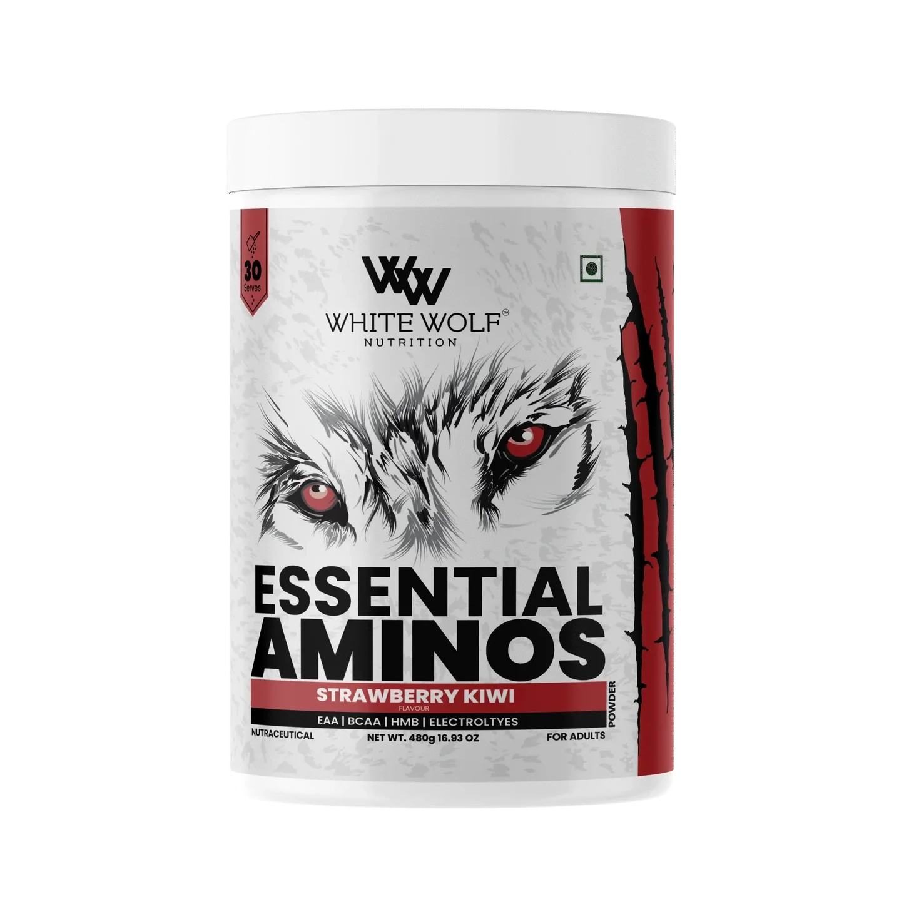

EAA — Есенциални аминокиселини
Есенциалните аминокиселини (EAA) са осем на брой и са жизненоважни за мускулния синтез. Без тях протеинът не може да се изгради.
- Левцин
- Изолевцин
- Валин
- Лизин
- Треонин
- Фенилаланин
- Метионин
- Триптофан
Ползи от EAA
- Максимално стимулират мускулния протеинов синтез след тренировка.
- Помагат при възстановяване след боледуване, диети или интензивен спорт.
- Подобряват азотния баланс и енергията по време на продължителни натоварвания.
Дозировка
Обичайно се препоръчва прием на 6–12 грама EAA непосредствено преди или след тренировка. Могат да се комбинират с въглехидрати за по-бърза абсорбция.